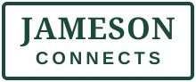

work(ed) with
Fahr über eine Marke →
 Lindt
Lindt
 Viral Vision
Niklas Wauch
TheRealAssad
Raphael Zenaty
Viral Vision
Niklas Wauch
TheRealAssad
Raphael Zenaty

Ali Badbanker Ehssan Memarpuri MietixWir bauen das komplette Anfrage-System für — Content, Ads und Funnel aus dem, was du schon hast. Erst im Kleinen bewiesen, dann skaliert.
Kein Pitch. Keine Setter. Du entscheidest danach in Ruhe.
work(ed) with
Fahr über eine Marke →
Lindt
Viral Vision
Niklas Wauch
TheRealAssad
Raphael Zenaty

Ali Badbanker Ehssan Memarpuri MietixGroße Versprechen, beeindruckende Slides, alles klingt machbar.
Schöne Grafiken, viele Impressionen, alles wirkt beschäftigt.
Ändert sich nichts. Und beim Nachfragen wird es plötzlich kompliziert.
Wenn du deshalb skeptisch bist: gut. Skepsis ist gesund. Genau für Leute wie dich arbeiten wir anders.
Weniger Versprechen.
Mehr Beweise.
Die meisten Agenturen zeigen dir hier fremde Screenshots und geliehene Erfolge. Wir zeigen dir unsere echten Zahlen — live im Backend, nicht als Screenshot. Und genauso transparent bauen wir deine auf: jede Reichweite, jeder Klick, jede Anfrage nachvollziehbar ab Tag eins.
Du siehst jede Zahl in Echtzeit — Reichweite, Klicks, Anfragen. Kein geschöntes Reporting, kein „vertrau uns".
Accounts, Daten, Content — alles läuft auf dich und bleibt deins. Auch ohne uns weiter nutzbar. Kein Lock-in.
Ein kleines, messbares Test-Setup statt großem Paket. Du siehst, was funktioniert — und skalierst erst, wenn die Belege da sind.
Ausgangslage
[Wo der Kunde vorher stand — Reichweite, Anfragen, was nicht lief.]
Was wir gemacht haben
[Content-Repurposing / Ads / Funnel — der konkrete Hebel in 1–2 Sätzen.]
„[Echtes Kundenzitat — 1–2 Sätze, wörtlich.]“
[Screenshot einsetzen:
images/case-[name].png]
Du investierst Zeit, Geld und Energie in dein Marketing, und trotzdem bewegt sich dein Umsatz kaum. Das liegt nicht an dir. Es liegt an den drei Wegen, die man dir bisher angeboten hat.
Pfad 1 · Selbst machen
Zwischen Kunden und Business bleibt kein Raum für täglichen Content. Du fängst an, verlierst die Konstanz, und nichts wächst.
Pfad 2 · Team aufbauen
A-Player sind teuer und rar. Bis ein eigenes Team steht und liefert, vergehen Monate — und die Fixkosten laufen sofort.
Pfad 3 · Agentur beauftragen
Bunte Präsentationen, Buzzwords, lange Verträge — und am Ende kaum belastbare Zahlen. Einmal reicht, um misstrauisch zu werden.
Ein schlankes Team mit KI-Systemen, das deine Marke aus deinen bestehenden Inhalten aufbaut und jede Entscheidung mit Zahlen belegt. Keine weitere Agentur. Die Marketing-Infrastruktur, die dir bisher gefehlt hat — ohne dass du sie selbst betreiben musst.
Unser Stack · immer auf dem neuesten Stand
Klassische Agentur
Für Experten, die selbst umsetzen wollen — aber nicht länger raten, was funktioniert. Wir gehen in den Deep-Dive deiner Marke, entwickeln die Strategie mit dir und übergeben dir ein System, das du fahren kannst.
Kein Fixpreis von der Stange — Scope und Investment richten sich nach Ziel und Laufzeit.
Direkt mit dem Gründer. Wir schauen auf dein Business, deine Zielgruppe und deine Zahlen — und sagen dir ehrlich, ob wir passen. Wenn nicht, sagen wir auch das.
Das nimmst du mit
Das passiert nicht
Deep-Dive in deine Marke: Vision, Positionierung, idealer Kunde. Erst Klarheit, dann System. Wir bauen die Strategie mit dir und richten alles auf deine Marke ein.
Wir starten bewusst klein: ein messbares Test-Setup mit klarem Ziel — der Beweis-Sprint. Du siehst jede Zahl. Skaliert wird nur, was sich bewiesen hat — nicht, was sich gut anhört.
Wir arbeiten mit wenigen Kunden intensiv statt mit vielen oberflächlich. Deshalb prüfen wir den Fit auf beiden Seiten — bevor Geld fließt.
Passt, wenn…
Passt nicht, wenn…
Founder · Strategie & Wachstum
Aid gründete Brand-Scale.eu mit einer klaren Haltung: Marketing wird zu oft versprochen und zu selten belegt. Er verantwortet Strategie, Brand-Architektur und den Aufbau von Reichweite, die nicht nur wächst, sondern Vertrauen mitnimmt.
Wer mit Brand-Scale.eu arbeitet, spricht direkt mit ihm — kein Setter, keine Zwischenschicht. Analyse, ehrliche Einschätzung und die Entscheidung, ob es passt.
Gearbeitet u. a. mit ZDF · Lindt · Wiener Linien · Sidemen
„Erst der Beweis. Dann skalieren wir.“
Berechtigt. Deshalb arbeiten wir Beweis-First: keine Erfolgs-Garantien, sondern eine ehrliche Diagnose, klare Test-Setups und transparente Zahlen. Du siehst, was funktioniert, bevor wir skalieren.
Dir gehören Accounts, Daten und Content — auch ohne uns weiter nutzbar. Wir dokumentieren jeden Schritt schriftlich. Zusammenarbeit fair und überschaubar, kein Lock-in.
Nein. Das Erstgespräch ist Analyse und Fit-Check, keine Verkaufsshow. Du bekommst danach ein schriftliches Angebot und entscheidest in Ruhe — ohne Countdown, ohne Nachfass-Druck.
Gar nicht — noch nicht. Genau deshalb starten wir mit dem Beweis-Sprint: einem kleinen, messbaren Test-Setup statt einem großen Paket. Du siehst alle Zahlen von Tag eins und skalierst erst, wenn die Belege da sind.
Genau dafür gibt es uns. Wir arbeiten aus deinem bestehenden Material (Repurposing) und klären Entscheidungen in kurzen Jour-Fixes. Du musst nicht zum Vollzeit-Creator werden.
Das klären wir vorab im Erstgespräch — ehrlich. Wenn der Fit nicht passt, sagen wir es dir klar, statt dir etwas zu verkaufen.
Zwei kleinere Wege, uns erst zu testen, bevor du dich festlegst.
Done With You
Strategie-Sparring mit dem Gründer — du setzt selbst um
Content-Audit
Ehrliche Analyse deiner bestehenden Inhalte — mit Zahlen